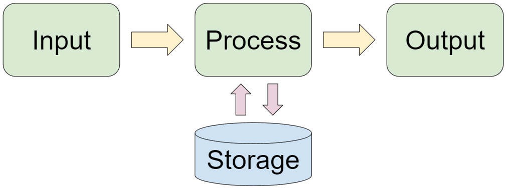

Computers hebben één ding gemeen en dat is dat ze vier verschillende taken moeten uitvoeren om iets gedaan te krijgen: ze registreren de invoer, slaan die informatie op, verwerken de opdracht en voeren de opdracht uit. Dit is dus iets wat elke computer doet, of het nou het computertje is in je drone of de computer waar je deze website op bekijkt. In deze vier taken gaan we ons verdiepen op deze pagina.
Met de invoer vertel je de computer wat je wilt doen. Met je muis vertel je bijvoorbeeld dat je naar een bepaalde plek op je scherm wilt, en door op je telefoon naar boven te swipen geef je aan naar nieuwe video te willen. Wil je zelf een opdracht versturen? Eigenlijk doe je dat de hele tijd al met het bekijken van deze website, maar als je op de knop hieronder klikt verstuur je er nog eentje! Of eigenlijk verstuur je er meerdere, je gaat er immers heen met je muis/touchpad, je klikt op de knop en zo verder.
Zoals je net zag, je opdracht is verwerkt! Dat ging best snel, toch? Als je een opdracht verstuurt dan slaat je computer informatie over die opdracht op. Vervolgens verwerkt je computer die informatie door het aan te passen door middel van meerdere commando's (een algoritme) en stuurt de bewerkte informatie vervolgens weer terug naar de opslag. Zo is de opdracht klaar om uitgevoerd te worden!
Hoe de opdracht uitgevoerd wordt, hangt af van wat je hebt gevraagd en waar de computer voor gemaakt is om te doen. Zo kan bijvoorbeeld een filmpje afgespeeld worden, of beweeg je vooruit in een game. Als je met andere computers verbonden bent via het internet dan kan jouw uitvoer weer invoer zijn voor een andere computer, als je bijvoorbeeld vooruit beweegt in een multiplayer game.